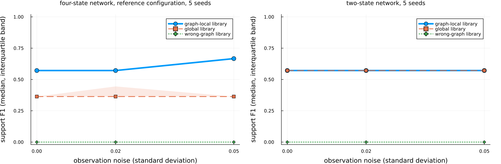
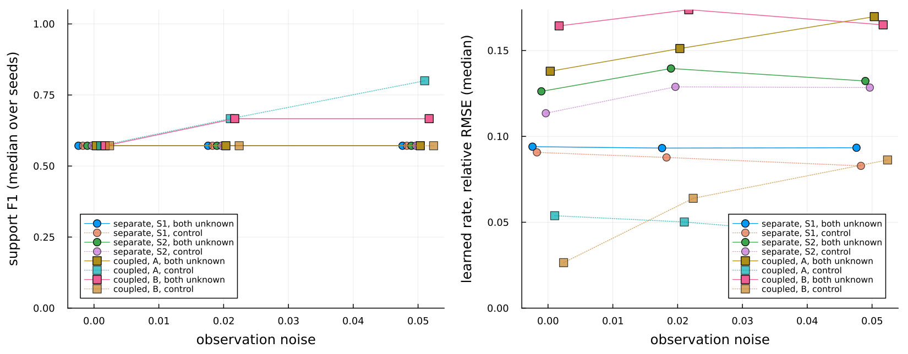

Benchmarks
The recovery benchmarks are the evidence behind the claims in this documentation. They are run by HybridKinetics.run_recovery_suite, the scripts in benchmark/, and two test entry points, and they are scored against the thresholds in HybridKinetics.RECOVERY_THRESHOLDS. Loosening a threshold is treated as a breaking change.
What is run
The fast checks run in the default test suite (Pkg.test(), file test/test_recovery.jl). They use exact or analytically generated destruction-rate samples and short training runs:
- Known kinetics: linear, Michaelis-Menten, Hill, and competitive networks with all terms known; the relative error of the physical parameters after
train_udemust stay below the threshold. - Analytical Hill recovery: support F1 and rate error from exact samples of a Hill rate; with 0.5% noise the nested subset selection must reach a combined support F1 of at least 0.99 on the same library.
- Graph-local versus global library: the same noisy samples plus a correlated distractor
z. The check is library membership:zmust be absent from the graph-local library and present in the global one. After subset selection both libraries can reach the same F1; the difference is the prior, not the score. - Three-state and six-state graph priors with a wrong-graph negative control: the graph-local library must contain the true regulator and no false parent; a library built from a deliberately wrong graph must miss the true regulator.
- Partial observation: recovery from subsampled destruction-rate values and the residual of the resulting hybrid model. Training on missing states is not part of the benchmark.
- Identifiability interventions: freezing
k_prod, normalizing the sampled rate, and changing the production rate; the production-rate versus destruction-scale collinearity must persist (cosine at least 0.95). - Negative control at 5% noise: analytical recovery must fail the 0.99 criterion, so that the noise limit stays visible.
The trained-model checks run in test/run_recovery_hard.jl (about 10 minutes on a 4-core machine; CI allows 180) and follow the reference protocol:
- Hill unknown term, no noise: nine experiments generated once, training on experiments 1 to 7. The neural rate must match the true rate on the discovery grid (
nn_rate_rmseat most 0.12) before discovery runs; then support recall must be at least 0.99, combined F1 at least 0.50, the hybrid residual on experiment 1 at most 0.30, and the scale warning must be raised with a cosine of at least 0.95. The residual and the neural-rate error on experiments 8 and 9 are reported. - The same protocol with 2% observation noise.
- Michaelis-Menten unknown term: neural-rate error and residual only. The Hill recall criterion is not applied, and canonical Michaelis-Menten support from the trained network is not claimed.
The trained-model library comparison (HybridKinetics.evaluate_trained_graph_local, full protocol in test/run_trained_library_comparison.jl) runs discovery with the graph-local, global, and wrong-graph libraries on one trained model's sampled rate.
Benchmark scripts
| Script | What it does | CI |
|---|---|---|
benchmark/recovery_suite.jl | fast sections, then the trained-model Hill and Michaelis-Menten sections with the printed report | no |
benchmark/sindy_baseline.jl | graph-local versus global library on the same samples; a DataDrivenSparse row when that package is loaded | no |
benchmark/recovery_seeds.jl | analytical recovery on seeds 103, 107, 111, 113, 127; --ude runs the trained-model protocol on each seed | no |
benchmark/noise_grid.jl | analytical Hill recovery at 0, 0.5, 2, 5, and 10% rate noise | no |
benchmark/functional_identifiability.jl | the five-restart functional-identifiability diagnostic | no |
benchmark/ude_f1_attempt.jl | replays the trained-model nuisance terms on the same library to document that they persist | no |
benchmark/scale_basis.jl | library size versus node count | no |
benchmark/library_comparison_study.jl | the library comparison study: five seeds, three noise levels, three libraries; resumable CSV output and a summary table | weekly |
benchmark/plot_library_comparison.jl | figure of support F1 against noise per library from the study CSV (needs Plots) | no |
benchmark/extra_terms_study.jl | four explanations for the extra terms that survive the reference discovery, measured on one training's samples | no |
benchmark/adjacent_bias_study.jl | the adjacent-node bias under the joint fit, a true-rate start, sequential training in both orderings and variance weighting; --scan for the scale surface | no |
benchmark/reliability_study.jl | the initialisation spread, the warm-up length, and the audit of runs whose hybrid model will not resimulate | no |
benchmark/allocation_check.jl | allocation count of the in-place right-hand side | yes |
benchmark/probe_datadriven.jl | checks whether DataDrivenSparse resolves in an isolated environment | yes, allowed to fail |
Representative results
The numbers below were recorded with the 0.9.2 protocol. They are single runs at fixed seeds, not success rates. A rerun of test/run_recovery_hard.jl for the 0.10.0 release, with freshly resolved dependency versions, passed every threshold but did not reproduce the recorded values exactly; the rerun values are listed under each table. Exact values depend on the dependency versions in the environment; the thresholds are what the package promises.
Trained-model recovery (test/run_recovery_hard.jl, training on experiments 1 to 7, held-out 8 and 9):
| Run | nn_rate_rmse | support_recall | support_f1 | data_residual | data_residual_train | data_residual_holdout | d_rmse_holdout |
|---|---|---|---|---|---|---|---|
| Hill, seed 103, no noise | 0.046 | 1.0 | 0.571 | 0.0042 | 0.0022 | 0.0041 | 0.012 |
| Hill, seed 113, 2% noise | 0.037 | 1.0 | 0.571 | 0.022 | 0.021 | 0.021 | 0.018 |
| Michaelis-Menten, seed 123 | 0.036 | not applied | 0.667 | 0.0054 | 0.0015 | 0.0032 | 0.0053 |
Rerun for 0.10.0 (September 2026): Hill seed 103 gave nn_rate_rmse 0.037, recall 1.0, F1 0.571, data_residual 0.0020, train 0.0010, held-out 0.0015, d_rmse_holdout 0.0046; Hill seed 113 with 2% noise gave 0.098, 1.0, 0.571, 0.022, 0.020, 0.020, 0.072; Michaelis-Menten seed 123 gave 0.028, recall not applied, F1 0.571, 0.0033, 0.0008, 0.0010, 0.0099.
Environment of the rerun: Julia 1.10.12, OrdinaryDiffEq 7.8.1, SciMLSensitivity 7.119.2, Lux 1.31.4, Optimization 5.9.0, Zygote 0.7.13 (SciMLBase 3.50.2). No Manifest is committed, so each installation resolves its own dependency versions, and benchmark values move with them; the thresholds in HybridKinetics.RECOVERY_THRESHOLDS are what is checked.
A support F1 of 0.571 means the true Hill monomials were all recovered (recall 1.0) together with two nuisance terms, a constant and a linear term. benchmark/ude_f1_attempt.jl shows that subset selection and scale normalization on the same library do not remove them.
Analytical recovery across seeds (benchmark/recovery_seeds.jl, 0.5% noise): all five seeds reach F1 1.00 and recall 1.00 (reproduced for 0.10.0).
Noise grid (benchmark/noise_grid.jl, seed 104; reproduced for 0.10.0, where the 10% row gave F1 0.50 instead of the recorded 0.40):
| rate noise | F1 | recall | passes 0.99 |
|---|---|---|---|
| 0 | 1.00 | 1.00 | yes |
| 0.5% | 1.00 | 1.00 | yes |
| 2% | 1.00 | 1.00 | yes |
| 5% | 0.40 | 0.50 | no |
| 10% | 0.40 | 0.50 | no |
Analytical recovery holds through 2% noise and breaks at 5%. Discovery from raw trajectories with finite-difference derivatives is therefore only claimed up to 2% noise.
Graph-local versus global library (benchmark/sindy_baseline.jl, seed 104, two-state fixture with an r^2-like distractor; reproduced for 0.10.0): both libraries reach F1 1.00 with no false parent after subset selection. The prior shows up as library membership of the distractor, not as an F1 gap. The DataDrivenSparse row is unavailable because that package does not resolve against the ModelingToolkit versions this package allows; benchmark/probe_datadriven.jl reproduces the resolve error.
Six-state graph prior (HybridKinetics.run_recovery_suite with sections = (:six_state, :six_state_wrong_graph)): the graph-local library contains the true regulator and no false parent and excludes the distractor; the global library includes the distractor and admits a false parent; the wrong-graph library misses the true regulator. Combined F1 is not scored on this fixture because the target state itself sits in the local library.
Library comparison study
The claim that a graph-local library recovers the unknown mechanism more reliably than a global library, and that a wrong graph degrades it, is tested as a study over seeds and noise levels on the four-state network of the trained-model library comparison. The states are S, R, Q, and a distractor Z; the unknown term is the Hill degradation of S with regulator R, D(R) = 1.7 R^2 / (0.36 + R^2). For each seed and noise level one model is trained on three initial conditions with 40 points each (Adam 100, then BFGS 50), its learned rate is sampled once on 80 designed coordinates (R on a grid from 0.1 to 2.0, Q and Z noisy functions of R, and S spread over the range observed in the training experiments in a fixed shuffled order; in 0.11 S was fixed at 0.4, which is still available as design = :constant), and discovery runs three times on those samples with the reference protocol's configuration (regress_unknown_rate with rate_discovery_config(): bootstrap 8, consensus refit, samples permuted before the validation split): with the graph-local library, monomials up to degree 2 of the parent of S in the graph (R); with the global library, monomials of every other state (R, Q, Z); and with the library of a deliberately wrong graph (Q as the parent of S instead of R). The first candidate of each discovery is scored against the true implicit support, R^2 in the numerator and R^2 in the denominator. Two held-out initial conditions, never used for training, give the held-out residual of the hybrid model that uses the discovered rate.
The default study is seeds 103, 107, 111, 113, and 127, observation noise 0, 0.02, and 0.05 (standard deviation of additive Gaussian noise on the observations), and the three libraries: 15 trainings and 45 rows per discovery configuration. benchmark/library_comparison_study.jl --variants all trained the 15 models in 32 minutes on 4 cores (median training 97 s, with the test suite running on the same machine) and scored four discovery configurations on each; the table below is the reference configuration (the reference variant), and benchmark/plot_library_comparison.jl drew the figure from the same rows. The reference-configuration rows of this run are identical, row for row, to the 0.11 run with S fixed at 0.4: the libraries of that configuration contain the parent states only, so the S coordinate does not enter them.

The left panel is the four-state network of this section with the reference configuration; the right panel is the two-state reference network described below, where the graph-local and global libraries coincide and their lines overlap.
Four-state network, reference configuration, median over the five seeds, with the first and third quartile in brackets:
| library | noise | support F1 | support recall | extra terms | held-out residual | neural-rate error |
|---|---|---|---|---|---|---|
| graph-local | 0 | 0.57 [0.57, 0.57] | 1.0 [1.0, 1.0] | 2 [2, 2] | 0.004 [0.003, 0.005] | 0.073 |
| graph-local | 0.02 | 0.57 [0.57, 0.57] | 1.0 [1.0, 1.0] | 2 [2, 2] | 0.020 [0.020, 0.021] | 0.075 |
| graph-local | 0.05 | 0.67 [0.67, 0.67] | 1.0 [1.0, 1.0] | 2 [2, 2] | 0.050 [0.048, 0.053] | 0.048 |
| global | 0 | 0.36 [0.36, 0.36] | 1.0 [1.0, 1.0] | 5 [5, 5] | 0.045 [0.023, 0.129] | 0.073 |
| global | 0.02 | 0.36 [0.36, 0.44] | 1.0 [1.0, 1.0] | 5 [3, 5] | 0.141 [0.049, 0.185] | 0.075 |
| global | 0.05 | 0.36 [0.36, 0.36] | 1.0 [1.0, 1.0] | 5 [5, 5] | 0.200 [0.146, 0.259] | 0.048 |
| wrong graph | 0 | 0.00 [0.00, 0.00] | 0.0 [0.0, 0.0] | 3 [3, 3] | 0.254 [0.254, 0.257] | 0.073 |
| wrong graph | 0.02 | 0.00 [0.00, 0.00] | 0.0 [0.0, 0.0] | 3 [3, 3] | 0.253 [0.251, 0.258] | 0.075 |
| wrong graph | 0.05 | 0.00 [0.00, 0.00] | 0.0 [0.0, 0.0] | 3 [2, 3] | 0.259 [0.253, 0.307] | 0.048 |
The neural-rate error is a property of the trained model, so it is the same for the three libraries of a run. Two of the 45 discoveries failed (global and wrong graph at seed 111, noise 0.05); they count as recall 0 and have no residual, and the residual medians are over the finite values. The graph-local extra terms are the constant and the linear term in all 15 runs; the global extra terms are the constant, Q, Q^2, Z, and Z^2.
Environment of the run: Julia 1.10.12, OrdinaryDiffEq 7.8.1, SciMLSensitivity 7.119.2, Lux 1.31.4, Optimization 5.9.0, Zygote 0.7.13 (SciMLBase 3.50.2), 2026-09-06. No Manifest is committed, so a rerun with other dependency versions can give other values.
What the numbers show. With the reference configuration all three libraries are compared on the same trained models and the same learned-rate samples. The graph-local library recovers the true support in all 15 runs (recall 1.0) with the fewest extra terms (two, the constant and the linear term of the reference protocol) and the lowest held-out residual. The global library also recovers the true support (recall 1.0 in 14 of 15 runs) but with about five extra terms and a held-out residual four to eleven times larger at each noise level (seven times pooled over the noise levels). The wrong-graph library never recovers the true support and has the largest residual. The neural-rate error varies more across seeds (0.035 to 0.19) than across noise levels, and the graph-local recall does not change within this noise range. The claim the study supports is therefore the ordering graph-local, then global, then wrong graph, with the graph-local prior removing the extra terms that the global library admits; it does not show recovery of the exact Hill form, since two nuisance terms remain, and it is five seeds on one network. The next subsection runs the same study on the two-state reference network; the one after it shows the original library-check configuration, whose recall was 0.5 in 0.11, and what caused it.
Two-state network
The same study function (fixture = :two_state) trains the two-state reference network of the tutorial with the reference protocol at each seed and noise level: nine initial conditions with 50 points each, experiments 1 to 7 for training and 8 and 9 held out, Adam 100 then BFGS 50, the truth parameters k_prod = 0.9, vmax = 1.8, K = 0.55, k_rs = 1.0, k_r = 0.6. The learned rate is sampled on the regulator grid of the training experiments (80 points, as in the reference protocol) with S spread over its observed range in a fixed shuffled order, and discovery runs with the libraries of the original library-check configuration (the study variant of the next subsection: libraries built by local_basis, which include the target state, no bootstrap). On a two-state network the graph-local library (S and its parent R) and the global library (S and the only other state, R) are the same library, so their rows coincide; the wrong graph makes S its own parent and its library is S alone. benchmark/library_comparison_study.jl --fixture two_state --variants all ran the 15 trainings in 39 minutes (median training 128 s, four studies sharing 4 cores) for 0.11, and again for 0.12 after the interaction-graph change described on the Concepts page (32 minutes, median training 120 s, the test suite running alongside): the 180 rows of the two runs are identical column for column. Median over the five seeds:
| library | noise | support F1 | support recall | extra terms | held-out residual | neural-rate error |
|---|---|---|---|---|---|---|
| graph-local | 0 | 0.57 [0.57, 0.57] | 1.0 | 2 [2, 2] | 0.008 [0.007, 0.010] | 0.046 |
| graph-local | 0.02 | 0.57 [0.57, 0.57] | 1.0 | 2 [2, 2] | 0.021 [0.020, 0.022] | 0.040 |
| graph-local | 0.05 | 0.57 [0.57, 0.57] | 1.0 | 2 [2, 2] | 0.050 [0.049, 0.051] | 0.042 |
| global | 0 | 0.57 [0.57, 0.57] | 1.0 | 2 [2, 2] | 0.008 [0.007, 0.010] | 0.046 |
| global | 0.02 | 0.57 [0.57, 0.57] | 1.0 | 2 [2, 2] | 0.021 [0.020, 0.022] | 0.040 |
| global | 0.05 | 0.57 [0.57, 0.57] | 1.0 | 2 [2, 2] | 0.050 [0.049, 0.051] | 0.042 |
| wrong graph | 0 | 0.00 | 0.0 | 1 | 1.303 [1.302, 1.310] | 0.046 |
| wrong graph | 0.02 | 0.00 | 0.0 | 1 | 1.242 [1.240, 1.245] | 0.040 |
| wrong graph | 0.05 | 0.00 | 0.0 | 1 | 1.160 [1.136, 1.167] | 0.042 |
On this network the true support is recovered in all 15 runs of the graph-local library (recall 1.0), with the same two extra terms as the reference protocol, a constant and a linear term, at every noise level. The wrong-graph library recovers nothing and its hybrid model has a residual more than a hundred times larger; one of its 15 discoveries failed (seed 111, noise 0.05). Same environment as above.
Why the four-state recall is 0.5
The trained-model library check (evaluate_trained_graph_local, the study variant) uses its own discovery configuration: libraries built by local_basis (graph-local: S and R; global: all four states; wrong graph: S and Q), no bootstrap, and the samples in their generated order. In 0.11 the study also used the check's own sample coordinates, on which S is fixed at 0.4 (design = :constant). On the same 15 trained models that configuration gives, median over the five seeds:
| library | noise | support F1 | support recall | extra terms | held-out residual |
|---|---|---|---|---|---|
| graph-local | 0 | 0.40 [0.40, 0.50] | 0.5 [0.5, 0.5] | 2 [1, 2] | 0.041 [0.024, 0.044] |
| graph-local | 0.02 | 0.40 [0.40, 0.50] | 0.5 [0.5, 0.5] | 2 [1, 2] | 0.032 [0.030, 0.056] |
| graph-local | 0.05 | 0.40 [0.40, 0.50] | 0.5 [0.5, 0.5] | 2 [1, 2] | 0.057 [0.054, 0.057] |
| global | 0 | 0.33 [0.00, 0.33] | 0.5 [0.0, 0.5] | 3 [3, 5] | 0.127 [0.125, 0.127] |
| global | 0.02 | 0.00 [0.00, 0.33] | 0.0 [0.0, 0.5] | 5 [3, 5] | 0.154 [0.139, 0.154] |
| global | 0.05 | 0.00 [0.00, 0.33] | 0.0 [0.0, 0.5] | 5 [3, 5] | 0.161 [0.114, 0.208] |
| wrong graph | 0 | 0.00 [0.00, 0.00] | 0.0 [0.0, 0.0] | 2 [2, 2] | 0.252 [0.251, 0.257] |
| wrong graph | 0.02 | 0.00 [0.00, 0.00] | 0.0 [0.0, 0.0] | 2 [2, 2] | 0.265 [0.249, 0.335] |
| wrong graph | 0.05 | 0.00 [0.00, 0.00] | 0.0 [0.0, 0.0] | 2 [2, 2] | 0.266 [0.247, 0.342] |
Three of these 45 rows (graph-local at seeds 103 and 111 and global at seed 103, all at noise 0.05) have no finite residual because the hybrid model with the discovered rate diverged. No library recovers the full true support here: every graph-local candidate is a polynomial in R (R^2 in the numerator with R in all 15 runs and 1 in 7 of them, for example 2.05 R - 0.62 R^2 at seed 103 without noise) and no denominator term is selected. This configuration and the reference protocol use the same discovery thresholds and degrees but differ in the library (local_basis always includes the target state S, and on the check's sample coordinates S is fixed at 0.4, so its column is a multiple of the constant term), in the bootstrap (none here; the reference protocol uses a block bootstrap of 8 with a consensus refit and nested pruning), and in the sample order (the reference protocol permutes the samples before the validation split). The denominator candidates are the same in both: every non-constant monomial, including R^2. To find which difference matters, the 0.11 study ran discovery on the same learned-rate samples of the same 15 trained models in four variants: study (the table above), bootstrap (the study's libraries with the reference bootstrap), parents (libraries over the parent states only, no bootstrap), and reference (parent-only libraries with the reference bootstrap, seed, and permutation; for the graph-local library this is exactly regress_unknown_rate with rate_discovery_config(); this is the headline table of this section). Pooled over the 15 runs of each library, S fixed at 0.4:
| variant | library | runs with recall 1.0 | support F1 | extra terms | held-out residual | extra-term labels (runs) |
|---|---|---|---|---|---|---|
| study | graph-local | 0 of 15 | 0.40 [0.40, 0.50] | 2 [1, 2] | 0.044 [0.030, 0.056] | R 15, 1 7, S^2 2 |
| study | global | 0 of 15 | 0.00 [0.00, 0.33] | 5 [3, 5] | 0.132 [0.123, 0.154] | R 15, Q^2 14, Z^2 14, Q 7, S 5, S^2 4, Z 1 |
| study | wrong graph | 0 of 15 | 0.00 | 2 [2, 2] | 0.257 [0.248, 0.301] | Q 15, S^2 8, 1 4, S 3 |
| bootstrap | graph-local | 0 of 15 | 0.50 [0.50, 0.50] | 1 [1, 1] | 0.032 [0.024, 0.054] | R 15, 1 1 |
| bootstrap | global | 0 of 15 | 0.50 [0.00, 0.50] | 1 [1, 1] | 0.133 [0.053, 0.174] | R 11, Q^2 3, Z^2 1 |
| bootstrap | wrong graph | 0 of 15 | 0.00 | 1 [1, 1] | 0.499 [0.491, 0.503] | Q 15, Q^2 3 |
| parents | graph-local | 15 of 15 | 0.57 [0.57, 0.57] | 2 [2, 2] | 0.021 [0.009, 0.047] | 1 15, R 15 |
| parents | global | 15 of 15 | 0.31 [0.31, 0.36] | 5 [5, 5] | 0.171 [0.116, 0.298] | 1 15, Q 15, Q^2 15, Z 15, Z^2 14 |
| parents | wrong graph | 0 of 15 | 0.00 | 2 [2, 2] | 0.339 [0.337, 0.343] | 1 15, Q 15 |
| reference | graph-local | 15 of 15 | 0.57 [0.57, 0.62] | 2 [2, 2] | 0.020 [0.007, 0.047] | 1 14, R 14 |
| reference | global | 14 of 15 | 0.36 [0.36, 0.38] | 5 [4, 5] | 0.139 [0.046, 0.200] | 1 14, Q 14, Z 14, Q^2 11, Z^2 11 |
| reference | wrong graph | 0 of 15 | 0.00 | 3 [3, 3] | 0.255 [0.252, 0.258] | 1 14, Q^2 14, Q 13 |
Two discoveries failed (reference variant, global and wrong-graph libraries, seed 111, noise 0.05); they count as recall 0. The study rows of this run are identical, row for row, to an earlier run of benchmark/library_comparison_study.jl with the study variant alone (28 minutes on 4 cores, median training 107 s), so retraining is reproducible on this machine.
The bootstrap removes the extra constant term but leaves recall at 0.5 in every run, and leaving the target state S out of the library restores recall 1.0 in all 15 runs, with the reference protocol's two extra terms, whether or not the bootstrap and the permutation are added. That left two candidate causes: the presence of S in the library, or the fact that its column is constant on the check's coordinates. The two-state table above, where S varies across the samples and the library still contains S, reaches recall 1.0, which pointed at the constant column.
The 0.12 run settled it. The same four variants were run on the same 15 trained models with the S coordinate spread over its observed range (design = :varying), the samples of R, Q, and Z unchanged (benchmark/library_comparison_study.jl --variants all --design varying, 32 minutes on 4 cores, median training 97 s; the trained models and their neural-rate errors are identical to the run above). Pooled over the 15 runs of each library:
| variant | library | runs with recall 1.0 | support F1 | extra terms | held-out residual | extra-term labels (runs) |
|---|---|---|---|---|---|---|
| study | graph-local | 15 of 15 | 0.57 [0.57, 0.57] | 2 [2, 2] | 0.020 [0.007, 0.052] | 1 15, R 15 |
| study | global | 15 of 15 | 0.25 [0.25, 0.28] | 7 [7, 7] | 0.176 [0.121, 0.297] | 1 15, Q 15, Q^2 15, Z 15, S 14, S^2 14, Z^2 14 |
| study | wrong graph | 0 of 15 | 0.00 | 2 [2, 2] | 0.340 [0.338, 0.345] | 1 15, Q 15 |
| bootstrap | graph-local | 15 of 15 | 0.57 [0.57, 0.57] | 2 [2, 2] | 0.020 [0.007, 0.052] | 1 15, R 15 |
| bootstrap | global | 15 of 15 | 0.44 [0.40, 0.44] | 3 [3, 4] | 0.120 [0.074, 0.164] | 1 15, Q 15, Z 15, Z^2 5, Q^2 3 |
| bootstrap | wrong graph | 0 of 15 | 0.00 | 2 [1, 2] | 0.343 [0.339, 0.489] | Q 15, 1 9 |
| parents | graph-local | 15 of 15 | 0.57 [0.57, 0.57] | 2 [2, 2] | 0.020 [0.007, 0.052] | 1 15, R 15 |
| parents | global | 15 of 15 | 0.31 [0.31, 0.36] | 5 [5, 5] | 0.171 [0.116, 0.298] | 1 15, Q 15, Q^2 15, Z 15, Z^2 14 |
| parents | wrong graph | 0 of 15 | 0.00 | 2 [2, 2] | 0.339 [0.337, 0.343] | 1 15, Q 15 |
| reference | graph-local | 15 of 15 | 0.57 [0.57, 0.62] | 2 [2, 2] | 0.020 [0.007, 0.047] | 1 14, R 14 |
| reference | global | 14 of 15 | 0.36 [0.36, 0.38] | 5 [4, 5] | 0.139 [0.046, 0.200] | 1 14, Q 14, Z 14, Q^2 11, Z^2 11 |
| reference | wrong graph | 0 of 15 | 0.00 | 3 [3, 3] | 0.255 [0.252, 0.258] | 1 14, Q^2 14, Q 13 |
The parents and reference rows are identical to the S-constant run (their libraries have no S column). With S varying, the study configuration recovers the true support in 15 of 15 runs with the graph-local library, with exactly the reference protocol's two extra terms and the same held-out residual as the parent-only library: the same discovery on the same learned rate, with S in the library, gives the same candidate as without it once the S column is not a multiple of the constant term. The cause of the recall 0.5 was therefore the constant column of the check's coordinate design, not the presence of the target state in the library, and the fix belongs to the study's coordinate design, not to local_basis, which is unchanged. Since 0.12 the study's default design is :varying; design = :constant reproduces the 0.11 rows, and evaluate_trained_graph_local itself keeps its constant design (its recorded outputs are unchanged). Two things are worth noting on the global library under the new design: it also recovers the true support in 15 of 15 runs, but with seven extra terms (S and S^2 now among them) and a held-out residual of 0.18 against 0.13 with S constant, so the ordering graph-local, then global, then wrong graph holds in all four variants of both runs, with a wider margin under the new design. The other variants are available through the variants keyword.
Stability selection on the library comparison study
The optional stability-selection stage (see Concepts) was run with its defaults (100 resamples, τ = 0.8) on the graph-local library of both networks, for the study and the reference discovery variants, on the same 15 trainings (benchmark/library_comparison_study.jl --pruning --variants study,reference, run in 0.11 with the S-constant design; 34 and 39 minutes; the trainings reproduced the neural-rate errors of the runs above exactly). It has not been rerun with the S-varying design. Median over the five seeds, pruning off against pruning on:
| network | variant | noise | F1 off | F1 on | recall off | recall on | extra terms off | extra terms on |
|---|---|---|---|---|---|---|---|---|
| four-state | study, S constant | 0 | 0.40 [0.40, 0.50] | 0.50 [0.50, 0.50] | 0.5 | 0.5 | 2 [1, 2] | 1 [1, 1] |
| four-state | study, S constant | 0.02 | 0.40 [0.40, 0.50] | 0.50 [0.50, 0.50] | 0.5 | 0.5 | 2 [1, 2] | 1 [1, 1] |
| four-state | study, S constant | 0.05 | 0.40 [0.40, 0.50] | 0.50 [0.50, 0.50] | 0.5 | 0.5 | 2 [1, 2] | 1 [1, 1] |
| four-state | reference | 0 | 0.57 [0.57, 0.57] | 0.57 [0.57, 0.57] | 1.0 | 1.0 | 2 | 2 |
| four-state | reference | 0.02 | 0.57 [0.57, 0.57] | 0.57 [0.57, 0.57] | 1.0 | 1.0 | 2 | 2 |
| four-state | reference | 0.05 | 0.67 [0.67, 0.67] | 0.67 [0.67, 0.67] | 1.0 | 1.0 | 2 | 2 |
| two-state | study | 0 | 0.57 [0.57, 0.57] | 0.57 [0.57, 0.57] | 1.0 | 1.0 | 2 | 2 |
| two-state | study | 0.02 | 0.57 [0.57, 0.57] | 0.57 [0.57, 0.57] | 1.0 | 1.0 | 2 | 2 |
| two-state | study | 0.05 | 0.57 [0.57, 0.57] | 0.57 [0.57, 0.57] | 1.0 | 1.0 | 2 | 2 |
| two-state | reference | 0 | 0.57 [0.57, 0.57] | 0.57 [0.57, 0.57] | 1.0 | 1.0 | 2 | 2 |
| two-state | reference | 0.02 | 0.57 [0.57, 0.67] | 0.57 [0.57, 0.80] | 1.0 | 1.0 | 2 | 2 [1, 2] |
| two-state | reference | 0.05 | 0.67 [0.57, 0.80] | 0.67 [0.57, 0.80] | 1.0 | 1.0 | 2 [1, 2] | 2 [1, 2] |
Pruning never reduced recall. It changed 9 of the 15 four-state study rows, dropping the constant or the S^2 term and leaving R as the only extra term (F1 0.40 to 0.50), and 1 of the 30 two-state rows (seed 127, noise 0.02, reference variant: the linear term dropped, F1 0.67 to 0.80). It did not remove the reference protocol's constant and linear terms in any other run: those terms are selected in at least 80% of the row resamples, so at τ = 0.8 they are stable, not spurious. The stage therefore does not raise F1 on the reference protocol; it stays available and off by default. Same environment as above.
Origin of the extra terms 1 and R
The reference protocol recovers the true support with two extra terms, the constant and the linear term of R. One hypothesis for them is that they absorb the production/destruction scale that the identifiability diagnostic flags as non-identifiable in practice. Three settings of the two-state fixture test it on the same 15 trainings as the study (seeds 103, 107, 111, 113, 127; noise 0, 0.02, 0.05), reference configuration, graph-local library, stability selection on (100 resamples, τ = 0.8) so that every library term's selection frequency is reported (benchmark/library_comparison_study.jl --fixture two_state --variants reference --pruning with --fixed-production, --normalise-rate, or --sample-points 160; each run 41 minutes with the four runs sharing 4 cores, median training 155 to 167 s). No default changed; the settings are keywords of library_comparison_run, off by default.
fixed_production: the production ratek_prodis frozen at its true value (0.9) during training, so the scale of the learned rate is not free.normalise_rate: the learned rate samples are divided by the fittedk_prodbefore the regression (the residuals scale the discovered rate back).n_sample_points = 160: twice the density of the regulator grid.
Pooled over the 15 runs of each setting, extras after pruning, and the selection frequency of the constant and linear terms (median over the 15 runs, quartiles in brackets):
| setting | runs with recall 1.0 | runs with 1 | runs with R | support F1 | held-out residual | frequency of 1 | frequency of R |
|---|---|---|---|---|---|---|---|
| reference defaults | 15 of 15 | 14 | 11 | 0.57 [0.57, 0.73] | 0.021 [0.006, 0.049] | 1.00 [1.00, 1.00] | 1.00 [0.86, 1.00] |
k_prod frozen at its true value | 15 of 15 | 15 | 11 | 0.57 [0.57, 0.73] | 0.035 [0.020, 0.051] | 1.00 [0.99, 1.00] | 1.00 [0.79, 1.00] |
rate samples divided by the fitted k_prod | 15 of 15 | 14 | 11 | 0.57 [0.57, 0.73] | 0.021 [0.006, 0.049] | 1.00 [1.00, 1.00] | 1.00 [0.86, 1.00] |
| 160 grid points | 15 of 15 | 15 | 12 | 0.57 [0.57, 0.62] | 0.021 [0.006, 0.049] | 1.00 [1.00, 1.00] | 1.00 [0.99, 1.00] |
None of the three removes the terms: the constant term is selected in every resample of every run in every setting, and the linear term in at least 79% of the resamples of the run where it is least stable. Fixing the production rate at its true value leaves the extras as they are and makes the held-out residual larger; dividing the samples by the fitted scale changes nothing (a constant factor does not change which terms survive thresholding; the rows are identical to the reference defaults); a denser grid makes the terms slightly more stable, not less. The hypothesis that 1 and R absorb the production/destruction scale is therefore not supported by these runs, and the terms are stable features of the learned rate itself under this library, threshold, and degree. The recovery rate R^2 / (K^2 + R^2) and the learned rate agree on the grid to within the neural-rate error (0.04 median), so the extra terms are small corrections that the regression prefers over the exact form at threshold 1e-3; they are not removed by the scale, and #57 stays open with these numbers. Same environment as the rest of the page; run 2026-09-06.
Why the extra terms survive
The 0.18 milestone asked the question again, with four hypotheses fixed in advance and the criterion for each written down before the runs. Every hypothesis is measured on the samples of one training, so what varies is the discovery step and not the training: benchmark/extra_terms_study.jl, both fixtures, seeds 103, 107, 111, 113, 127, noise 0.0, 0.02 and 0.05, 30 cells and 2310 rows in benchmark/results/extra_terms_study.csv.
What the truth is. Before any of it, the labelling itself was checked. The library of the reference configuration is the numerator 1, R, R^2 and the denominator R, R^2; the denominator carries no constant because D(0) = 1 is the implicit normalisation of the implicit form. The true Hill law vmax R^2 / (K^2 + R^2) is (vmax/K^2) R^2 / (1 + (1/K^2) R^2) in that normalisation, so its support is R^2 in the numerator and R^2 in the denominator, which is exactly what hill_rate_support(2) records. A candidate carrying that support and those coefficients reproduces the true law to 1e-12 and scores F1 1.0, so the metric's ceiling is attainable; the test suite checks both. The recorded truth is therefore right and the extra terms are real. The reference fit keeps all five library terms in 30 of 30 runs, which is two true positives and three false positives: recall 1.0, precision 0.4, F1 4/7 = 0.571, the published number.
The extra terms are not small. No threshold below 0.2 removes anything, in any run of either fixture: the coefficients of 1 and of R are of the same order as those of the true terms. That is why the sparsity threshold, at its reference value of 1e-3, never had a chance to act.
| sparsity threshold | true support recovered, two-state | four-state | median F1 | runs losing recall |
|---|---|---|---|---|
| 1e-3 (the reference) | 0 of 15 | 0 of 15 | 0.571 | 0 |
| 0.05 | 0 of 15 | 0 of 15 | 0.571 | 2 |
| 0.2 | 0 of 15 | 0 of 15 | 0.571 | 4 |
| 0.3 | 2 of 15 | 3 of 15 | 0.800 | 6 |
| 0.75 | 4 of 15 | 7 of 15 | 0.800 | 9 |
| 1.0 | 5 of 15 | 7 of 15 | 0.800 | 13 |
| 1.5 | 11 of 15 | 7 of 15 | 1.000 | 12 |
| 3.0 | 7 of 15 | 0 of 15 | 0.000 | 23 |
By the time a threshold removes the extra terms it is also removing true ones: at 1.5, the best value, 12 of 30 runs have lost a true monomial.
What the extra terms are doing (hypothesis 1.1, ablation). Each accepted term was removed in turn and the remaining coefficients refitted on the same rows, recording what the removal costs against the learned rate, against the true Hill law, and on the held-out experiments.
| fixture | removed | runs | regression residual | error against the true rate | held-out residual |
|---|---|---|---|---|---|
| two-state | an extra term | 45 | x3.62 | x0.877 | x1.005 |
| two-state | a true term | 30 | x20.01 | x1.093 | x1.244 |
| four-state | an extra term | 45 | x7.02 | x0.981 | x1.044 |
| four-state | a true term | 30 | x21.68 | x1.015 | x1.177 |
Every figure is the median ratio to the same run with nothing removed. The two kinds of term behave differently in a way that answers the question: removing an extra term costs three to seven times the regression residual but leaves the fit to the true rate unchanged or better (0.877 and 0.981) and the held-out residual essentially unchanged; removing a true term costs twenty times the residual and makes the fit to the true rate and the held-out residual worse. So the extra terms are doing real work — they are not nuisance terms the fit could simply drop — but the work they do is describing the gap between the trained network's rate and the true law, not the mechanism. The pre-registered confirmation asked for a residual growth of at least ten times with the true-rate error within 5 per cent, in at least 12 of 15 runs per fixture: the direction holds in exactly 12 of 15 on both fixtures, and the tenfold magnitude in 0 of 15 and 1 of 15. The criterion as written is therefore not met; the quantity that separates the two kinds of term cleanly is not the size of the residual growth but its sign against the true rate, which was not what the criterion was written around.
Selection rules (hypothesis 1.2). The sparsity threshold was swept over sixteen values and the model selected by AIC, by BIC and by the knee of the (term count, residual) front.
| rule | recovers the true support | median terms kept |
|---|---|---|
| AIC | 1 of 30 | 5 |
| BIC | 1 of 30 | 5 |
| knee of the front | 12 of 30 | 2 |
AIC and BIC keep the whole library in 29 of 30 runs, for the reason anticipated when the hypothesis was written: the full model fits the learned rate almost exactly, so the log-residual term dominates any complexity penalty. The knee does much better and is still far from the pre-registered 14 of 15 on both fixtures. Refuted.
Separate thresholds (hypothesis 1.3). A 7x7 grid of numerator and denominator thresholds. The best pairs, num 1.0 den 1.0 and num 1.0 den 0.5, recover the true support in 12 of 30 runs and lose recall in 13. No pair reaches the pre-registered 14 of 15 on both fixtures. Refuted. The sub-case "do not sparsify the denominator's normalisation term" does not arise: the denominator library has no constant to sparsify.
Derivative rows (hypothesis 1.4). Differentiating the implicit identity gives rows linear in the same coefficients, so the derivative of the learned rate — estimated by central differences on the samples sorted by the regulator, at no cost in samples or training — can be added to the regression. It changes nothing: 0 of 30 runs recover the true support at any of the three thresholds tried, and the median F1 stays at 0.571. Refuted.
What is now known. In 23 of 30 runs some threshold on the sweep does reach F1 1.0, so the information needed to separate the true terms from the extra ones is present in the front; none of the three rules extracts it reliably. And the runs where a rule does succeed are not the runs where the learned rate is closer to the truth — the median error of the fitted rate against the true law is 0.058 where the knee succeeds and 0.046 where it fails — so "train better and the extras will go" is not supported by these runs either. The support F1 of 0.571 is best read as a measure of how far the learned rate sits from the true law in the library's basis, not as a property of the discovery step's sparsity; no discovery-side change tested here raises it without costing recall, and none is adopted.
Environment: Julia 1.10.12, OrdinaryDiffEq 7.8.1, SciMLSensitivity 7.119.3, Lux 1.31.4, Optimization 5.9.0, Zygote 0.7.13, SciMLBase 3.51.0, HybridKinetics 0.18.0, four cores, 2026-09-13.
Two unknown terms
The 0.16 study asks one question with data: when two unknown destruction terms sit on coupled nodes, can they be separated, or do the two neural terms compensate for each other? It runs benchmark/multi_term_study.jl, which appends rows to benchmark/results/multi_term_study.csv and resumes where it stopped.
Fixtures. build_two_term_separate_network: four states S1, R1, S2, R2, two copies of the tutorial's motif joined by the production of S2 from R1; the unknown terms are the Hill degradations of S1 (regulator R1) and S2 (regulator R2), on nodes that do not regulate each other's term. build_two_term_coupled_network: three states A, B, C, A and B produced from C and each degraded by a Hill term in the other; the unknown terms sit on adjacent nodes and each one's regulator is the other unknown node. build_three_term_network: the separate fixture with the decay of R1 also a Hill term in S1, so S1 and R1 are adjacent and S2 is separate. For every fixture the single-unknown controls are the same network with only one term unknown and the other known with its true parameters, so the cost of the second unknown term is measured against the same data.
Grid. Seeds 103, 107, 111, 113, 127; observation noise 0.0, 0.02, 0.05; nine initial conditions per fixture drawn once from a fixed seed, 50 points on (0, 8), the last two experiments held out; the reference training defaults (Adam 100, BFGS 50); the graph-local library with the reference discovery configuration, once without and once with stability selection on the same trained model.
Scores. Per term: support recall, precision and F1 of the discovered implicit support against the true Hill support, the extra terms, the relative RMSE of the learned rate against the true rate on the sampling grid, and the signed relative bias of the learned rate (mean of (learned − true) / true over the grid). Per run: the residual of the model with every discovered rate substituted on the first training experiment and on the held-out experiments, the cross-term collinearity of each pair, and the training wall time. Two terms are said to have compensated when their signed biases have opposite signs and each is larger in magnitude than the bias of the same term in the single-unknown control at the same seed and noise.
Environment. Julia 1.10.12, OrdinaryDiffEq 7.8.1, SciMLSensitivity 7.119.2, Lux 1.31.4, Optimization 5.9.0, Zygote 0.7.13, HybridKinetics 0.16.0, four cores with three study processes running at once, 2026-09-12. Rows: benchmark/results/multi_term_study.csv.
Two terms, noise 0.0, 0.02 and 0.05
Five seeds per cell; medians over seeds, interquartile range for F1. Without stability selection; with it the table is the same except that the single-unknown control of B in the coupled fixture gains one support term (F1 median 0.667 instead of 0.571 at every noise level) and the IQR of coupled A 0.02 narrows to [0.667, 0.667].
| fixture | unknown | noise | term | runs | F1 median [IQR] | rate RMSE median | bias median | held-out residual | cross-term median | training s |
|---|---|---|---|---|---|---|---|---|---|---|
| coupled | A | 0.0 | A | 5/5 | 0.571 [0.571, 0.571] | 0.054 | 0.096 | 0.006 | NA | 210 |
| coupled | A | 0.02 | A | 5/5 | 0.667 [0.571, 0.667] | 0.05 | 0.065 | 0.021 | NA | 177 |
| coupled | A | 0.05 | A | 5/5 | 0.8 [0.667, 0.8] | 0.041 | 0.058 | 0.049 | NA | 198 |
| coupled | A+B | 0.0 | A | 5/5 | 0.571 [0.571, 0.571] | 0.138 | -0.014 | 0.02 | 0.959 | 272 |
| coupled | A+B | 0.0 | B | 5/5 | 0.571 [0.571, 0.571] | 0.164 | -0.16 | 0.02 | 0.959 | 272 |
| coupled | A+B | 0.02 | A | 5/5 | 0.571 [0.571, 0.571] | 0.151 | -0.025 | 0.034 | 0.958 | 238 |
| coupled | A+B | 0.02 | B | 5/5 | 0.667 [0.571, 0.667] | 0.174 | -0.17 | 0.034 | 0.958 | 238 |
| coupled | A+B | 0.05 | A | 5/5 | 0.571 [0.571, 0.571] | 0.17 | -0.009 | 0.053 | 0.957 | 239 |
| coupled | A+B | 0.05 | B | 5/5 | 0.667 [0.571, 0.8] | 0.165 | -0.16 | 0.053 | 0.957 | 239 |
| coupled | B | 0.0 | B | 5/5 | 0.571 [0.571, 0.8] | 0.026 | 0.003 | 0.01 | NA | 215 |
| coupled | B | 0.02 | B | 4/5 | 0.571 [0.571, 0.667] | 0.064 | 0.007 | 0.021 | NA | 179 |
| coupled | B | 0.05 | B | 5/5 | 0.571 [0.571, 0.667] | 0.086 | -0.011 | 0.052 | NA | 185 |
| separate | S1 | 0.0 | S1 | 5/5 | 0.571 [0.571, 0.571] | 0.091 | 0.254 | 0.004 | NA | 345 |
| separate | S1 | 0.02 | S1 | 5/5 | 0.571 [0.571, 0.571] | 0.088 | 0.204 | 0.019 | NA | 229 |
| separate | S1 | 0.05 | S1 | 5/5 | 0.571 [0.571, 0.571] | 0.083 | 0.109 | 0.047 | NA | 232 |
| separate | S1+S2 | 0.0 | S1 | 5/5 | 0.571 [0.571, 0.571] | 0.094 | 0.281 | 0.011 | 0.397 | 444 |
| separate | S1+S2 | 0.0 | S2 | 5/5 | 0.571 [0.571, 0.571] | 0.126 | 0.154 | 0.011 | 0.397 | 444 |
| separate | S1+S2 | 0.02 | S1 | 5/5 | 0.571 [0.571, 0.571] | 0.093 | 0.196 | 0.023 | 0.399 | 308 |
| separate | S1+S2 | 0.02 | S2 | 5/5 | 0.571 [0.571, 0.571] | 0.14 | 0.147 | 0.023 | 0.399 | 308 |
| separate | S1+S2 | 0.05 | S1 | 5/5 | 0.571 [0.571, 0.667] | 0.093 | 0.105 | 0.05 | 0.402 | 309 |
| separate | S1+S2 | 0.05 | S2 | 5/5 | 0.571 [0.571, 0.571] | 0.132 | 0.164 | 0.05 | 0.402 | 309 |
| separate | S2 | 0.0 | S2 | 5/5 | 0.571 [0.571, 0.571] | 0.113 | 0.105 | 0.009 | NA | 279 |
| separate | S2 | 0.02 | S2 | 5/5 | 0.571 [0.571, 0.571] | 0.129 | 0.103 | 0.021 | NA | 226 |
| separate | S2 | 0.05 | S2 | 5/5 | 0.571 [0.571, 0.571] | 0.128 | 0.069 | 0.049 | NA | 227 |
The "runs" column counts successful discoveries; coupled B 0.02 has one seed whose single-unknown discovery failed (F1 0 in the median's data).

Compensation. In none of the 30 two-unknown runs (two fixtures, five seeds, three noise levels) did the two terms compensate in the sense defined above (opposite-sign biases, both larger than the controls'), with or without stability selection. What happened instead differs by fixture and does not change with noise:
- Separate (non-adjacent) nodes: the second unknown term costs nothing measurable. Support F1 is the control's in every cell (0.571 medians on both sides at every noise level), the learned-rate error is within 1.15 times the control's (
S10.094 against 0.091,S20.126 against 0.113 at noise 0.0;S10.093 against 0.083,S20.132 against 0.128 at 0.05), and the biases have the control's sign and size. The cross-term collinearity is 0.371 to 0.425 in every run. Training takes 362 s against 237 and 253 s for the two controls (medians over 15 runs each), about 1.5 times. - Coupled (adjacent) nodes: the supports are still recovered at the control's level (F1 medians 0.571 to 0.667 against 0.571 to 0.8), so the symbolic form survives, but the learned rates are worse and in a consistent direction: the rate of
B, whose regulator is the other unknown node, is biased low in all fifteen runs (per-run bias −0.149 to −0.301, median −0.16 at every noise level) while its single-unknown control is unbiased (medians 0.003, 0.007 and −0.011). The rate error is 6.3 times the control's forBat noise 0.0 (0.164 against 0.026) and 1.9 times at 0.05 (0.165 against 0.086, where the control itself has degraded with noise), and 2.6 to 4.1 times forA. The held-out residual doubles at noise 0.0 (0.020 against 0.006 and 0.010) and is within the noise floor at 0.05 (0.053 against 0.049 and 0.052). The cross-term collinearity is 0.954 to 0.964 in every run. Training takes 239 s against 179 and 181 s, 1.3 times.
So the answer to the milestone's question is: two terms on non-adjacent nodes separate cleanly; two terms on adjacent nodes do not trade against each other, but the downstream term absorbs a systematic scale bias of about 16% that the single-term run does not have, and the diagnostic sees it. This is the picture the pre-code analysis predicted for the adjacent case (the term whose input is the other unknown node degrades first), minus the opposite-sign compensation it also allowed for, which did not occur at any noise level.
The two-term cross-term values clustered by structure with nothing in between: 0.371 to 0.425 for the separate fixture, 0.954 to 0.964 for the coupled one, at every noise level. Within the coupled cluster the value did not distinguish seeds or noise levels (all within 0.01 of each other), so it says which structure you have, not how far a particular run drifted. A split on the per-run rate degradation alone (learned-rate error above twice the control's) does not separate the two clusters, because single runs of the separate fixture also cross that ratio; the diagnostic is a structural warning, not a per-run error estimate. The threshold itself is set after the three-term fixture below, whose values fall inside that gap.
Three terms, noise 0.0
The three-term fixture ran at noise 0.0 only (five seeds, the three-unknown run and its three single-unknown controls, 60 rows); its noise 0.02 and 0.05 cells were dropped when the study reached its four-hour budget, as the milestone's plan says to drop first. Without stability selection; with it the table is identical.
| fixture | unknown | noise | term | runs | F1 median [IQR] | rate RMSE median | bias median | held-out residual | cross-term median | training s |
|---|---|---|---|---|---|---|---|---|---|---|
| three | R1 | 0.0 | R1 | 5/5 | 0.571 [0.571, 0.571] | 0.053 | 0.105 | 0.004 | NA | 232 |
| three | S1 | 0.0 | S1 | 5/5 | 0.571 [0.571, 0.571] | 0.098 | 0.244 | 0.002 | NA | 229 |
| three | S1+R1+S2 | 0.0 | R1 | 5/5 | 0.571 [0.571, 0.571] | 0.119 | 0.241 | 0.008 | 0.547 | 358 |
| three | S1+R1+S2 | 0.0 | S1 | 5/5 | 0.571 [0.571, 0.571] | 0.14 | 0.396 | 0.008 | 0.547 | 358 |
| three | S1+R1+S2 | 0.0 | S2 | 5/5 | 0.571 [0.333, 0.571] | 0.093 | 0.086 | 0.008 | 0.547 | 358 |
| three | S2 | 0.0 | S2 | 5/5 | 0.571 [0.571, 0.571] | 0.075 | 0.062 | 0.004 | NA | 228 |
Three terms cost more than two, and in a different way from the coupled two-term fixture. No run showed opposite-sign compensation: every learned rate is biased in the same direction as its control. But the adjacent pair S1, R1 (the decay of R1 is a Hill term in S1, the degradation of S1 a Hill term in R1) is biased further high than the controls in every run (S1 median bias 0.396 against 0.244, R1 0.241 against 0.105), with learned-rate errors 1.4 times (S1, 0.140 against 0.098) and 2.2 times (R1, 0.119 against 0.053) the controls'; the third term S2, on the separate branch, keeps its rate error at the control's level (0.093 against 0.075) but loses its support in two of five seeds (F1 0 and 0.333, against 0.571 in all five controls). The held-out residual is 0.008 against 0.002 to 0.004 for the controls. Training takes 358 s against 228 to 233 s, 1.6 times. Per pair, the cross-term collinearity is 0.40 to 0.61 for S1–R1, 0.50 to 0.55 for R1–S2 (R1 produces S2), and 0.08 to 0.21 for S1–S2; the largest pair of each run is 0.498 to 0.610.
Threshold. Over the 35 multi-unknown runs of the study, every run with no measurable cost of the extra term (the 15 runs of the separate fixture) had all its pairs at or below 0.425, and every run with a measurable cost (the 15 coupled runs and the 5 three-term runs) had at least one pair at or above 0.498. CROSS_TERM_COLLINEARITY_THRESHOLD is 0.46, the midpoint of that gap, so the warning fires on every run in which the study measured a cost and on none in which it did not. The size of the cost grows with the value (about 1.1 times the control's rate error at 0.4, 1.4 to 2.2 times at 0.5 to 0.6, 2 to 6 times at 0.96), but five seeds and three fixtures are too few to read the value as an error estimate; treat it as a warning that the discovered coefficients of that pair need another look. Before the three-term rows came in, the two-term fixtures alone would have put the threshold at 0.69, the midpoint of their gap; the three-term fixture showed a measurable cost below that, which is why the lower value is used.
Where the adjacent-node bias comes from
Two unknown terms on adjacent nodes leave one term's learned rate biased low (above, median 16 per cent in 5 of 5 seeds). The 0.18 milestone asked whether that is a property of the data or of the search, and then measured three corrections, each with its criterion written down before the run. Every row below is one unknown term of one training of the coupled fixture at noise 0, seeds 103, 107, 111, 113 and 127, scored exactly as the 0.16 study scores it: the signed relative bias is the mean of (learned - true) / true over the regulator grid.
Which term is downstream cannot be read off the graph. In the coupled fixture each unknown node regulates the other's term, so the topology is symmetric; what breaks the symmetry is the parameters, which a user does not have for an unknown term. The study reports both terms as "regulated by the other unknown", adjacent_ordering_is_graph_readable returns false, and the sequential experiment below is run in both orderings rather than assuming one. Node B is named here as the node the joint fit leaves biased, which is an observation about these runs, not something a user could predict.
Optimisation, not identifiability. Both neural terms were pre-trained to their true rates on the sampling grid and then trained with the normal joint settings.
| setting | node A bias | node B bias | node A rate error | node B rate error | final loss |
|---|---|---|---|---|---|
| joint, the package's own path | -0.014 | -0.160 | 0.138 | 0.164 | 1.0e-4 |
| started at the true rates | +0.008 | +0.008 | 0.013 | 0.032 | 1.1e-5 |
Medians over the five seeds; the cross-term collinearity is 0.96 in every run of both settings. The two pre-registered criteria were: the bias returns to within 5 percentage points of the joint bias in at least 4 of 5 seeds (a property of the data), or it stays under a third of it in at least 4 of 5 seeds (a property of the search). Node B's bias is 0.19, 0.02, 0.16, 0.05 and 0.09 of its joint value, so 5 of 5 seeds meet the second criterion and 0 of 5 meet the first. The joint fit also stops at about ten times the final training loss reached from the true rates. The data support a nearly unbiased fit of both terms; the joint search does not find it. Starting from the true rates is not something a user can do, so this is a diagnosis and not a remedy.
Sequential training. The pre-registered procedure trains one term with the other node's mechanism known at its true values, freezes the rate it learned, and trains the remaining term against it. Both orderings were run.
| trained first | node | role | bias median | bias range | runs under 5% |
|---|---|---|---|---|---|
| A | A | trained first, then frozen | +0.096 | [-0.012, +0.198] | 2 of 5 |
| A | B | trained second | -0.066 | [-0.171, -0.058] | 0 of 5 |
| B | B | trained first, then frozen | +0.003 | [-0.006, +0.030] | 5 of 5 |
| B | A | trained second | +0.083 | [+0.052, +0.128] | 0 of 5 |
Read against the pre-registered criterion — the median bias of the biased node below 5 per cent in at least 4 of 5 seeds — training node B first meets it, 5 of 5, and training node A first does not, 0 of 5. Read against what the runs show, the criterion measured the wrong thing: the bias does not go away, it moves to whichever term is fitted second. Training B first takes node B from -0.160 to +0.003 and puts node A, which the joint fit left at -0.014, at +0.083. Both readings are reported because the criterion was fixed in advance and the observation contradicts what it was meant to capture. The procedure is in any case not available to a user with two unknown terms: its first step needs the other node's true mechanism, and nothing tells the user which ordering to use.
Loss weighting. Each node's residual was weighted by the inverse of that state's observed variance (0.554, 0.433, 1.0 on this fixture), expressed as one single-state replica experiment per state so that the trainer's own metadata[:weight] carries it. Node B's bias grows: median -0.247 against -0.160, range -0.309 to -0.213, and its rate error rises from 0.164 to 0.236. 0 of 5 seeds meet the criterion. Refuted.
Scale coupling. A neural destruction term has no scale parameter to constrain: NeuralDestructionTerm.scale is a compile-time constant read off the stoichiometry, and the scale of the rate lives inside the network's output, so constraining the product of the two scales would mean adding a penalty term to the loss. Before building one, the held-out residual of the trained pair was measured with each learned rate multiplied by a constant, over a 5x5 grid of factors from 0.8 to 1.25.
| seed | at (1, 1) | both x1.1 | both x0.9 | A x1.1, B x0.9 | A x0.9, B x1.1 |
|---|---|---|---|---|---|
| 103 | 0.0072 | 0.0171 | 0.0176 | 0.0892 | 0.1083 |
| 107 | 0.0091 | 0.0169 | 0.0166 | 0.0926 | 0.1196 |
| 111 | 0.0054 | 0.0174 | 0.0152 | 0.0891 | 0.1114 |
| 113 | 0.0029 | 0.0191 | 0.0158 | 0.0839 | 0.1090 |
| 127 | 0.0031 | 0.0156 | 0.0177 | 0.0849 | 0.1106 |
The trained pair sits at the minimum of the grid in all five seeds. Moving both rates together by 10 per cent costs about 2.4 times the residual; moving them 10 per cent in opposite directions costs about 13 times, a ratio of 5.5 to 6.3. The ratio of the two scales is therefore the well-determined direction and their common scale the shallow one, so a constraint on the product would act where the data are already informative. The bias measured above lies in that same well-determined direction — node B down, node A unchanged — which the data penalise by an order of magnitude, and the joint fit stops there anyway. That is further evidence for the reading above and against a scale-coupling explanation, so no constrained fit was built; what is reported is that the pre-registered correction targets the wrong direction.
Environment: Julia 1.10.12, OrdinaryDiffEq 7.8.1, SciMLSensitivity 7.119.3, Lux 1.31.4, Optimization 5.9.0, Zygote 0.7.13, SciMLBase 3.51.0, HybridKinetics 0.18.0, four cores, 2026-09-13.
How much one run varies
Three questions a user should be able to answer about a single run: whether the answer depends on the random initialisation, whether the hybrid model resimulates, and whether the warm-up length is a good default. All are measured on the two-state reference protocol with the data seed and the initialisation seed separated, which the package's own path ties together; reliability_matches_package checks that the separated path reproduces fit_unknown_destruction exactly at the package's warm-up, and the learned rates agree to the last bit.
The random initialisation. Ten initialisations of the neural term on the same data, five seeds, 50 runs.
| seed | runs | final loss median | loss spread within the seed | learned-rate error median | error range | distinct supports |
|---|---|---|---|---|---|---|
| 103 | 10 | 2.52e-6 | x6 | 0.044 | 0.036 to 0.052 | 1 |
| 107 | 10 | 2.57e-6 | x6 | 0.040 | 0.031 to 0.051 | 1 |
| 111 | 10 | 3.14e-6 | x11 | 0.042 | 0.034 to 0.065 | 1 |
| 113 | 10 | 2.25e-6 | x11 | 0.039 | 0.033 to 0.084 | 1 |
| 127 | 10 | 2.74e-6 | x90 | 0.043 | 0.022 to 0.075 | 1 |
All 50 runs recover the same support, 1, R, R^2 in the numerator and R, R^2 in the denominator, so the pre-registered confirmation — one support in at least 9 of 10 for every seed — holds at 10 of 10 for all five. What moves is the numbers: the final training loss spans a factor of 6 to 90 within a seed and the learned-rate error runs from 0.022 to 0.084 across the 50 runs. One run's loss is one draw from that spread and should not be read as a property of the data.
Where the divergences are, and what predicts them. Some runs of the stored studies produce a hybrid model that cannot be resimulated: the discovered rate is put back into the network and the solver fails, leaving a non-finite residual. The pre-registered explanation was that the discovered denominator has a root inside or near the range the resimulation visits, and that a check on the candidate alone would predict it. The measurement covered the stored rows and new ones.
The reference protocol produced nothing to audit: 15 runs, five seeds at noise 0, 0.02 and 0.05, none diverged, with denominator minima between 0.949 and 1.013 and held-out residuals from 0.002 to 0.054. The stored rows name where the divergences are instead — the four-state fixture on the constant sample design, which holds S at 0.4 on every sample and stopped being the default in 0.12. Retraining those cells reproduces them exactly: the same four seed-library-variant cells, the same extra terms, the same non-finite residuals.
| design | noise | runs | diverged | no candidate |
|---|---|---|---|---|
| constant | 0.0 | 60 | 0 | 0 |
| constant | 0.02 | 60 | 0 | 0 |
| constant | 0.05 | 60 | 4 | 2 |
| varying (the default since 0.12) | 0.05 | 60 | 0 | 2 |
Every candidate that diverged has a denominator identically 1 — the sparse fit kept no denominator term at all — so its minimum is 1.0 on the samples, on their bounding box and on the box widened past the observed range. No threshold on the denominator can flag them.
| check on the candidate alone | catches | flags runs that were fine |
|---|---|---|
| denominator below 0.1 on the sample box | 0 of 4 | 47 of 232 |
| denominator below 0.5 on the sample box | 0 of 4 | 48 of 232 |
| denominator negative on the sample box | 0 of 4 | 46 of 232 |
| denominator below 0.1 on the widened box | 0 of 4 | 50 of 232 |
| denominator sign change on the sample box | 0 of 4 | 46 of 232 |
| denominator sign change on the widened box | 0 of 4 | 49 of 232 |
| rate goes negative on the sample box | 1 of 4 | 82 of 232 |
| rate goes negative on the widened box | 4 of 4 | 75 of 232 |
The pre-registered confirmation asked for at least 80 per cent of the historical divergences with no false alarms. Every denominator-based check catches none of them and warns about forty-six to fifty of the two hundred and thirty-two runs that resimulated without trouble, so the hypothesis is refuted. The same grids do show what the diverging candidates have in common: the discovered rate turns negative outside the range it was fitted on, which makes the destruction term a source and the state grow without bound. That catches all four, but it also flags seventy-five runs that were fine — one of them a candidate whose rate reaches -2.4e5 on the widened grid and still resimulates, because the trajectory never goes there. It is therefore not a check that could be added to the existing denominator-safety guard, and none is added.
The warm-up length. The warm-up is a short Adam pass on the first experiment whose optimizer state the joint fit then reuses. It was run at zero, at the package's length and at twice it, with all observations and with every second observation of the regulator hidden — the sparsely observed species of the p53 case study.
| observations | warm-up | runs | final loss median | learned-rate error median | error range | distinct supports | diverged |
|---|---|---|---|---|---|---|---|
| all | none | 5 | 4.13e-6 | 0.050 | 0.041 to 0.091 | 2 | 0 |
| all | the package's length | 5 | 3.86e-6 | 0.046 | 0.038 to 0.049 | 1 | 0 |
| all | twice it | 5 | 2.49e-6 | 0.043 | 0.034 to 0.059 | 1 | 0 |
| every second regulator value hidden | none | 5 | 4.45e-6 | 0.040 | 0.039 to 0.046 | 2 | 0 |
| every second regulator value hidden | the package's length | 5 | 3.85e-6 | 0.039 | 0.036 to 0.043 | 1 | 0 |
| every second regulator value hidden | twice it | 5 | 2.39e-6 | 0.040 | 0.037 to 0.077 | 1 | 0 |
The pre-registered confirmation asked that the package's length be within noise of the better of the other two on both fixtures, and it is: on fully observed data the best median is 0.043 at twice the length against 0.046 at the package's, and with observations hidden the package's length is itself the best at 0.039. Both gaps are far smaller than the 0.022-to-0.084 spread that ten initialisations of the same data produce, so the warm-up length matters less than which random initialisation a run happens to draw. Confirmed. Dropping the warm-up entirely is the only setting that changes anything visible: the rate error rises to a median 0.050 on fully observed data with one run at 0.091, and one seed's discovery drops the linear numerator term, which happens to score a better F1 of 0.667. Thirty runs, none diverged.
A reliability section in the printed report was left out. It was conditional on these three measurements producing a number a user should see before trusting a run, and they do not: the initialisation spread is a property of ten runs rather than of the one a user has, the warm-up length is a configuration value and not a per-run measurement, and the one per-run quantity that was a candidate — the discovered denominator's minimum, which the report already computes — is shown above not to predict the failure it would be reported for.
Environment: Julia 1.10.12, OrdinaryDiffEq 7.8.1, SciMLSensitivity 7.119.3, Lux 1.31.4, Optimization 5.9.0, Zygote 0.7.13, SciMLBase 3.51.0, HybridKinetics 0.18.0, four cores, 2026-09-13.
Closing the optimisation gap
0.18 measured a solution the training path does not reach at its default budget. 0.19 measured how far away it is, how much of the distance each of several approaches recovers, and – the result that reframes the rest – that closing the distance in training loss does not close it in discovered support. Reference two-state protocol, five seeds, noise 0, every number from a run recorded with the environment below.
The floor and the ceiling. The floor is the package's own path. The ceiling is the same protocol with the network pre-trained to the true Hill rate before training starts — not something a user can do, and the point of it is to say what the rest of the workflow produces when training begins where it is trying to end.
| start | final loss median | learned-rate error | support F1 | held-out residual |
|---|---|---|---|---|
| the package's own | 3.86e-6 | 0.0465 | 0.571 in 5 of 5 | 0.00431 |
| pre-trained to the true rate | 3.20e-7 | 0.0051 | 1.000 in 5 of 5 | 0.00096 |
All five ceiling runs discover exactly the true support, R^2 over R^2, with no extra terms. The extras are therefore not a limit of the library or of the discovery step: they are what this training's solution looks like. The loss gap is x13.4 at the median, from x2.2 to x134.5.
Why the better solution is not reachable by descending. Evaluating the training loss along the straight line between the two solutions, at twenty points, gives a peak in between of 139 to 19,055 times the higher endpoint, in 5 of 5 seeds. The better solution is in a different basin. A barrier on the straight line does not prove no descending path exists, only that the two are not joined by the simplest one.
Nor is the gap a matter of scale. The best single scalar on the learned rate is 0.969 to 0.995 and recovers 1 to 12 per cent of the rate-error gap. Taking either solution's network with the other's mechanistic parameters gives a loss 10 to 300 times worse than both, so the network and the mechanistic parameters are jointly tuned — the production-rate against destruction-scale trade-off, visible as two separate consistent balances.
What decides the support is the shape of the error, not its size. Mixing a trained run's own error into the true rate and running the reference discovery unchanged at each mixture, F1 is 1.0 only at exactly zero error and 0.571 by 0.2 per cent. Yet the ceiling runs sit at 0.46 to 0.90 per cent error and score 1.0. A rate can be several times less accurate and still give the true support, if its error has a different shape.
What each approach recovers.
| approach | share of the loss gap closed | learned-rate error | support F1 above 0.571 |
|---|---|---|---|
| lowest of ten random initialisations | (loss better in 4 of 5) | 0.0429 to 0.0358 | 0 of 5 |
| network pre-trained to the estimate's scale only | none | 0.0450 | 0 of 5 |
| network pre-trained to a rate estimated from the data | 88% median | 0.0465 to 0.0282 | 2 of 5 |
| smoothing the learned rate after training | not applicable | worse at every window | 0 of 5 |
The rate estimated from the data is read straight off the fixture: with dS/dt = k_prod R - D(R) S, every observed point gives D(R) once dS/dt is taken by central differences, and the points are binned by regulator value. k_prod is not known to the fit either, so the estimate uses the same flat guess the package's own path starts from and is good only up to a scale — 10 to 21 per cent from the true law, and 4 to 20 per cent once the best single scalar is removed. It is deliberately not a Hill pre-fit, which would hand discovery the form it is meant to find.
Starting there closes a median 88 per cent of the loss gap and improves the support in two seeds, each time by dropping the linear denominator term. In two seeds it reaches a lower loss than the true-rate start, so the ceiling is a reference point rather than a bound.
How much of it is the iteration budget. The reference protocol runs 100 Adam iterations and 50 of BFGS. The same fits at two, four and eight times that budget, three seeds, noise 0, as a share of the loss gap between the default fit and the true-rate fit:
| seed | 2x | 4x | 8x | support F1 at 2x / 4x / 8x |
|---|---|---|---|---|
| 103 | 104% | 108% | 108% | 0.571 / 0.571 / 0.571 |
| 107 | 99% | 100% | 101% | 0.571 / 0.571 / 0.571 |
| 111 | 170% | 180% | 184% | 0.571 / 0.571 / 0.667 |
Over 100 per cent means the fit ends below the true-rate fit. The default training is therefore not at a minimum; it has run out of iterations, and the loss gap above is a budget artefact.
The support barely follows. It stays at 0.571 in eight of the nine runs, with the same five terms; seed 111 at eight times the budget drops one term and reaches 0.667. And the extra budget is not merely failing to get close enough: seed 107 at 8x reaches a learned-rate error of 0.0044 and seed 111 at 4x reaches 0.0037, both more accurate than every true-rate fit, whose best is 0.0046 — and those true-rate fits all score 1.000 while these score 0.571.
A fit can be more accurate in its learned rate than the true-rate fit, and two orders of magnitude lower in training loss, and still recover the wrong support. The loss gap and the discovery gap are different gaps.
8x the budget costs 3.8x the wall time on seed 103 (1145 s against 304 s), 4x costs 2.7x; fixed per-run overhead is why it is sublinear. No default changed, so the shipped path's wall time is unchanged.
Neither the training loss nor the size of the rate error decides the support. Two measurements say this directly. The budget runs above reach a learned rate more accurate than every true-rate fit and still recover five terms where the true-rate fits recover two. And on seed 107 at 5 per cent noise, two fits of the same data whose learned-rate errors differ by a factor of 2.4 – 0.0206 against 0.0491 – recover byte-identical support, the same five terms, at training losses within half a per cent of each other:
| seed 107, noise 0.05 | final loss | learned-rate error | support F1 |
|---|---|---|---|
| warm-up curriculum 0.25/0.5/1.0 | 2.407e-3 | 0.0206 | 0.571 |
| warm-up curriculum 0.35/0.7/1.0 | 2.418e-3 | 0.0491 | 0.571 |
A rate can be two and a half times more accurate and give the same answer, or as accurate and give a different one. What the discovery step responds to is not the magnitude of the error.
The warm-up curriculum, measured and not adopted. The horizon curriculum is read only by the single-IC warm-up. Twenty fits – five seeds, noise 0 and 0.05, both schedules, discovery identical in every arm – give ten paired cells. At noise 0 the support is 0.571 with the extras 1 and R in all ten runs, both schedules, although the schedules reach different losses and rate errors. At 5 per cent noise the support moves in two cells and in opposite directions: seed 127 is better under 0.25/0.5/1.0 (1.000 against 0.800) and seed 113 better under 0.35/0.7/1.0 (1.000 against 0.800), with three ties. Five ties and no wins at noise 0, one win each at noise: the schedule is not systematically better either way, and no default moved.
The extra terms come off in an order. Across every cell measured here, the discovered support degrades through the same sequence: F1 0.571 carries both extras, the constant 1 and the linear R; F1 0.800 carries the constant alone; F1 1.000 carries neither. R is dropped before 1 in every cell where the support moves at all – the noise-0.05 cells of seeds 113 and 127 under both schedules, and the 0.800 and 0.667 cells elsewhere in this section. The recall is 1.0 throughout, so nothing true is ever lost. This is recorded as observed; why the linear term should be the fragile one is not explained here.
What does not work, and why it was not built. A curvature penalty on the learned rate was the one route to a better support that does not go through the optimiser. Before adding one to the training objective, the premise was measured: smoothing a rate a training already produced, over moving-average windows of 1 to 25 samples, leaves the discovered support at 0.571 in all thirty runs and makes the rate error worse at every window. The learned rate is already smoother than the smoother, so there is no roughness for a penalty to act on, and none was built.
Environment: Julia 1.10.12, OrdinaryDiffEq 7.8.1, SciMLSensitivity 7.119.3, Lux 1.31.4, Optimization 5.9.0, Zygote 0.7.13, SciMLBase 3.51.0, HybridKinetics 0.19.0, four cores, 2026-09-13 and 14.
Report fields
| Field | Meaning |
|---|---|
rmse, rel | relative error of the physical parameters (known kinetics) |
nn_correlation, nn_rate_rmse | trained neural rate versus the true rate on the discovery grid |
support_recall | fraction of the true monomials recovered |
support_f1 | F1 of the recovered numerator and denominator support |
discovered_rate_rmse | discovered rate versus the true rate on the grid |
data_residual | hybrid-model residual on training experiment 1 |
data_residual_train, data_residual_holdout | mean residuals on experiments 1 to 7 and on 8 and 9 |
d_rmse_holdout, d_rmse_holdout_domain | neural-rate error at held-out regulator values and on the training-derived band |
local_f1, global_f1 | discovery F1 with the graph-local and the global library |
local_has_true_parent, local_false_parent, Z_in_local_library | library-membership checks |
identifiability | the production/destruction trade-off report |
closed_loop_residual | hybrid residual after discovery from subsampled rate values |
Running locally
julia --project=. -e 'using Pkg; Pkg.test()'
julia --project=. test/run_recovery_hard.jl
julia --project=. test/run_trained_library_comparison.jl
julia --project=. benchmark/recovery_suite.jl
julia --project=. benchmark/sindy_baseline.jl
julia --project=. benchmark/recovery_seeds.jl
julia --project=. benchmark/noise_grid.jl
julia --project=. benchmark/library_comparison_study.jlbenchmark/library_comparison_study.jl --timed runs one seed and one noise level and prints the extrapolated wall time of the default study.